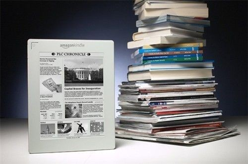

编辑：书伴
近日，有外媒消息称，电商巨头亚马逊正计划在美国西雅图 University Village 购物中心开设一家实体书店，而且已经有建筑工人正在进行店铺的装修施工。如果该消息属实，那将意味着这家一直在线上生存并达到繁荣的互联网巨头终于将触角伸到了线下。

众所周知，亚马逊的几乎所有业务都是基于线上；无论是电子商务、电子出版、媒体等业务，还是云服务、云计算、软件平台等服务，似乎都不需要占据多大的实体空间。然而，此番亚马逊涉足线下，看似有些突兀；但如果仔细分析的话，却是颇有深意在的。
自从 Kindle 这个品牌诞生以来，依托亚马逊的品牌知名度和独一无二的电子书等资源优势，它赢得了消费者的强烈欢迎，配置 e-Ink 电子墨水屏幕的 Kindle 阅读器系列几乎成为电子书阅读器的代名词。
亚马逊还利用这个品牌推出了 Kindle Fire 系列平板电脑，不仅可以用来阅读电子书，也同时可以作为一个应用软件平台满足人们的影音、游戏等娱乐需求；Kindle Fire 系列的平板电脑虽然不如 Kindle 阅读器那么受欢迎，但还是有一定的存在空间。
不过，一直以来，Kindle 在美国主要有两个销售渠道：一个是亚马逊官网；一个是美国电器零售商百思买的线下商店和线上网站。这就意味着，消费者如果要想在购买之前预先体验 Kindle 系列的产品，只能通过百思买的线下商店。站在用户的角度，这种体验方式似乎并不是最理想的，并不能充分激起消费者的购买欲望。正因为如此，通过实体书店来售卖 Kindle 就显得很有必要了。
而我们通过以下两个方面来说明：
第一，目前 Kindle 系列产品已经在中国上市，除了中国官网、天猫官方旗舰店等线上销售渠道之外，亚马逊还选择与苏宁、国美等渠道合作来进行线下推广与销售。但是亚马逊在中国市场上对 Kindle 进行线下推广的脚步并没有停留于此。
2014 年 8 月，亚马逊中国宣布与中信出版社达成战略合作协议：消费者可以在 Kindle 书店购买和阅读大量来自于中信出版社的电子书内容，并且可以在多家中信出版社的实体书店体验和购买 Kindle 全线产品。
这就意味着，Kindle 系列产品通过此种方式获得了一个全新的线下展示和销售渠道；而且在实体书店中展示售卖 Kindle 产品，本身就是针对消费者是否有阅读消费需求的一种初步筛选；这类消费者显然更有可能购买 kindle 产品。
此外，实体书店本身就可以在空间上营造出一个与阅读相关的文化氛围；消费者置身于这种氛围中很容易被暗示，更倾向于去关注 Kindle 作为一个产品在阅读体验上的文化属性和品位。这种做法在某种意义上可以赋予消费者的 Kindle 行为以特殊的意义，也因此更能激起 Kindle 的购买热情。
第二，亚马逊的品牌形象一直是建立在线上服务的基础之上。目前，虽然亚马逊的品牌已经在全世界范围内得到了广泛认同，但这种认同似乎更多地体现在互联网空间里，而在现实世界缺乏足够的存在感。
反观其他公司，苹果的线下官方零售店已经遍布全球，并且成为一个绝佳的品牌推广场所和消费者体验与服务空间。向来以软件服务为生命根基的微软，也已经开始效仿苹果在纽约第五大道开设官方旗舰店。
而虽然亚马逊的主要业务是建立在线上，但是由于 Kindle 阅读器、平板电脑等系列产品的诞生，亚马逊完全可以在开办一家实体书店的基础之上，打造一个以 Kindle 产品为核心的展示、销售、服务平台。这样一来，不仅能够进一步增强 Kindle 用户对于亚马逊公司的认同感和归属感，也更利于扩大其线下的品牌影响力。
亚马逊要开设的毕竟是一家实体书店，所以卖书也是自然之事；那么问题就来了，以亚马逊官网上所销售的纸质书和电子书的数量之多，这家实体书店是不大可能对接线上直接售卖的。很有可能，这家书店所卖的书就是亚马逊自己出版的。
在美国，亚马逊已经不仅仅是一个纸质书和电子书销售平台；实际上，它已经亲自涉足图书出版领域，摇身一变成为一个出版公司。
亚马逊于 2009 年期间悄然进入出版业务，最初仅仅是同一些独立作家签约，所签约内容也是将这些作者已发表作品重新出版。亚马逊通过新组建的 Amazon Encore 部门，为这些作家的书籍提供营销支持。一年之后，亚马逊通过其 Amazon Crossing 业务部门，开始出版最初并非英文撰写的翻译作品。
后来，亚马逊将美国出版业老将考什巴姆招至麾下，并负责亚马逊整体出版业务。考什巴姆曾在美国媒体巨头时代华纳任职，其强项是同美国各作家签约。亚马逊招聘考什巴姆，也向外界传达了这样的信号：该公司将在小说类和非小说类等书籍出版事宜上同传统出版商展开竞争。
如果说亚马逊早期作为一个在线图书销售平台推动了图书销售的发展的话，那么亚马逊后来推出的电子书和 Kindle 阅读器则已经造成了对传统图书行业的冲击；但纸质书的电子化从某种意义上说是无可避免的趋势，Kindle 也算顺应了潮流。所以传统图书行业虽然受到了极大冲击，却无可奈何。
但是后来亚马逊亲自进军出版业的做法，却遭到了整个行业的强烈抵制。2012 年秋，由亚马逊出版的美国演员兼导演潘妮·马歇尔的自传《我的母亲很疯狂》一书上架四周之后，只卖出了 7000 册，远远低于同类书同期销量的 5.4 万册。
究其原因，该书在各大书店并没有全面铺货，如并没有出现在 Barnes& Noble、沃尔玛及塔吉特等 689 个商店中；一些独立图书销售商也没有进货。而索尼、谷歌等公司也没有发行该书的数字版。而这本书之所以没有进入美国各个大型图书连锁店，实际上就是一场有意抵制的结果。
很明显，亚马逊先是进入在线图书零售行业，又推出了电子书和 Kindle 业务，后来又开始自己出版图书，这实际上已经构成了一个自足的图书制作、出版、销售等生态链，自然对美国的整个图书出版行业造成了强烈冲击。如今在整体发展遭到抵制的情况下，亚马逊推出实体书店来售卖自家出版的书，也是自然而然的。
虽然电子书行业的发展的确对传统图书行业造成了巨大冲击，但是电子书并不如分析师们曾预言的那样在 2015 年取代了纸质书；事实上，根据最近的数据，电子书的销售却开始出现了下滑，有许多看电子书的读者已经重新回到了纸质书。当电子书在信息时代的高歌猛进达到其生长极限的时候，它必须要面临与纸质书和平相处的问题。
此次亚马逊要开设一家实体书店，某种意义上也是对当前条件下纸质书和电子书现状的一种反映。Kindle 无疑是一款划时代的伟大产品，但至少在当下，它存在的最好姿势就是静静地躺在这家实体书店里，与其他纸质书一样，默默地等待着人们的选择。
—————–
来源：钛媒体